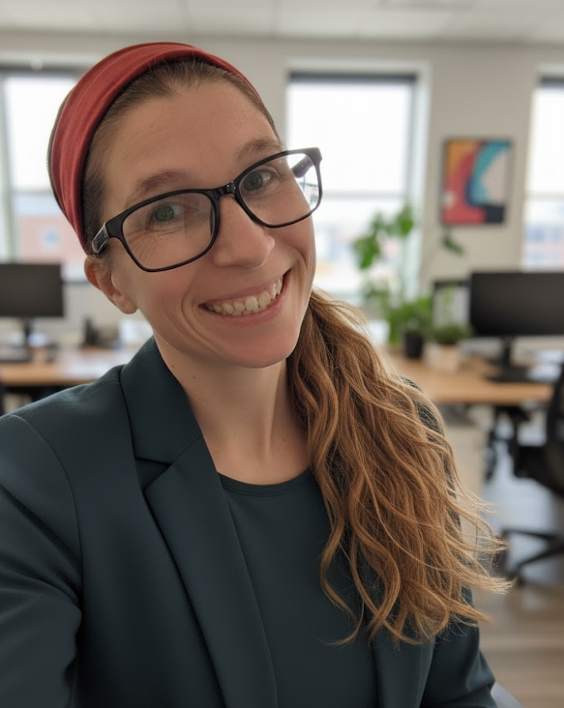
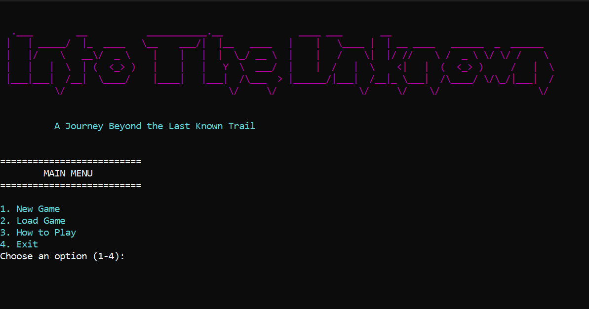
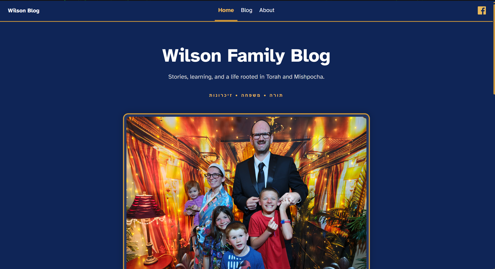

Languages
C++, Python, HTML, CSS
Student Developer Portfolio
I build to understand. C++, Python, Linux, and whatever else makes me stop and ask, “How does that actually work?” I don't want to stop at knowing enough to make something work. I want to know enough to make it better. That's the kind of developer I want to become.

About Me
I started my studies in IT and programming wasn't really where I thought I would end up. Once I started doing more of it, I realized it was the part I actually enjoyed. That's what made me switch to Computer Science and choose AI as my focus. IT gave me a lot of experience with Linux and introduced me to full-stack development and cloud computing. That background has stayed with me as I've moved further into programming. I like knowing how the code works, but I also want to know how everything around it works together.
C++, Python, HTML, CSS
Visual Studio, Git, GitHub, Linux
Object-oriented programming, debugging, and clean code
Featured Work
A look at some of the projects I've built and what I learned while building them.

C++ Console Application
A text-based adventure game where the player travels through different locations, collects items, and makes choices along the way. I built it as my C++ portfolio project to bring together what I had been learning about classes, functions, program flow, and organizing a larger C++ project.
One of the biggest challenges was getting used to working on a project like an actual developer instead of just writing code and turning it in. I had to learn how to plan my work using issues and milestones. I also worked with branches and pull requests and started to understand version control better. As I got used to the workflow, keeping track of the project became easier. It also helped me understand why structure and organization matter when a project starts getting bigger.

Web Application
A family blog I built with Astro and turned into a site my family can actually use. It started with an Astro blog template, but I redesigned it and added the features I wanted, including a CMS so posts can be created without having to manually edit the site every time.
This project taught me a lot about what goes into building and maintaining a website beyond just making the pages look right. I worked through setting up the CMS, authentication, deployment, comments, and figuring out problems when something worked locally but not on the live site. I also got more comfortable going back and changing things as I figured out what I actually wanted the site to do.